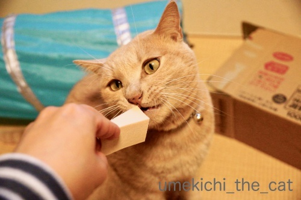
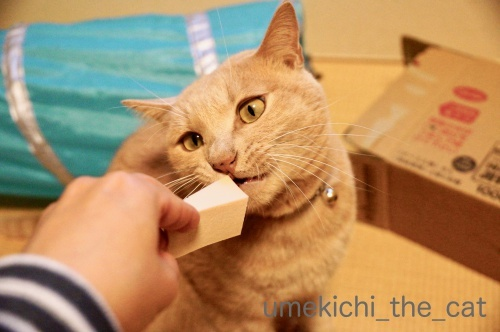

パフパフ、がぶ！ [梅吉]
洗って干しておいたら

強奪されました。
美味しいものと楽しいものを目の前にすると凶悪顔になるのでしょうか。
舌まで出して悪ーい顔してます(*>艸<)
男性の方は「？」かな。
これはお化粧の時に使うパフなんですよ＾＾
真剣に見つめてます。
ていっ！

こんなもののどこに興味を惹かれるのか全く分かりませんが夢中です。

![[猫]](https://blog.ss-blog.jp/_images_e/101.gif) あが〜〜〜〜〜っ
あが〜〜〜〜〜っ
噛み心地だってパフっとするだけだと思いますが
ひたすらガブガブしようと頑張ります(^_^;)

面白さは理解はできませんが楽しいことは分かりますよ、梅吉さんw
この手のものはボロボロにして飲み込んでしまいそうなので即撤収しました。
一度遊ばせたら味をしめてお化粧するたび横からお手手が伸びてきて
めんどくさいことになってます(-_-メ)
ねばーっと後を引く映画「ボヘミアン・ラプソディ」
いまだに毎日一曲はQueenを聞いています。
こんな動画も見つけました＾＾
面白変な顔して弾いてるだけかと思ったら本気でした。
ピアニカって結構肺活量が大変だと思うのですがフレーズ途中で切れることもなく上手い。
ちゃんと音に「泣き」もはいっててメロディラインが歌ってます。
世の中ってつくづくいろんな才能持った人がいるものだなって思いました(≧▽≦）
（お二人フレディとジョンのコスプレ？
ヒゲの人はスーパーマリオにしか見えませんがwww）
そしてそれを真剣に見るにゃんこwww
余談ですけど私が小学生の時使ってたのは「ピアニカ」でした。
「メロディアン」「メロディオン」（も〜さんのコメントで「！！！」そうでしたw訂正いたします）
って言うのもありましたよね。
（前者はヤマハ、後者はスズキ）
いまでも小学校で使っているのかしら・・・
 ↑ガブッと一押し↑
↑ガブッと一押し↑
カルディで購入したこちら。
ブラック＆グリーンオリーブとチェダーチーズ、ドライトマト、鴨肉をマリネにしたもの。
この組み合わせで美味しくないわけがない！
ワインが進みましたわー＾＾
こんなパッケージで売ってます。
これからの季節手間なしで食卓に一品、おすすめです！！

強奪されました。
美味しいものと楽しいものを目の前にすると凶悪顔になるのでしょうか。
舌まで出して悪ーい顔してます(*>艸<)
男性の方は「？」かな。
これはお化粧の時に使うパフなんですよ＾＾
真剣に見つめてます。
ていっ！

こんなもののどこに興味を惹かれるのか全く分かりませんが夢中です。

噛み心地だってパフっとするだけだと思いますが
ひたすらガブガブしようと頑張ります(^_^;)

面白さは理解はできませんが楽しいことは分かりますよ、梅吉さんw
この手のものはボロボロにして飲み込んでしまいそうなので即撤収しました。
一度遊ばせたら味をしめてお化粧するたび横からお手手が伸びてきて
めんどくさいことになってます(-_-メ)
ねばーっと後を引く映画「ボヘミアン・ラプソディ」
いまだに毎日一曲はQueenを聞いています。
こんな動画も見つけました＾＾
面白変な顔して弾いてるだけかと思ったら本気でした。
ピアニカって結構肺活量が大変だと思うのですがフレーズ途中で切れることもなく上手い。
ちゃんと音に「泣き」もはいっててメロディラインが歌ってます。
世の中ってつくづくいろんな才能持った人がいるものだなって思いました(≧▽≦）
（お二人フレディとジョンのコスプレ？
ヒゲの人はスーパーマリオにしか見えませんがwww）
そしてそれを真剣に見るにゃんこwww
余談ですけど私が小学生の時使ってたのは「ピアニカ」でした。
って言うのもありましたよね。
（前者はヤマハ、後者はスズキ）
いまでも小学校で使っているのかしら・・・
カルディで購入したこちら。
ブラック＆グリーンオリーブとチェダーチーズ、ドライトマト、鴨肉をマリネにしたもの。
この組み合わせで美味しくないわけがない！
ワインが進みましたわー＾＾
こんなパッケージで売ってます。
これからの季節手間なしで食卓に一品、おすすめです！！

カフェオレ色の梅吉

梅吉 2023年8月10日 永眠


梅吉と出会った譲渡会

犬猫の理由なき殺処分ゼロ
妄想広告
UMEKICHI 光

爆発的に早い！
時々攻撃的！
Thanks to Mr.Boss365
爆発的に早い！
時々攻撃的！
Thanks to Mr.Boss365

ねばーーと後を引く映画って言えてます（笑）
最後のポンが、可笑しく（本人達も）笑ってますね（笑）
ヒゲの形が違う（笑）
ちぃさん、面白いもの見つけましたね（笑）
梅吉さん、興味持ってますね。
梅吉さんも虜にするメロディです（笑）
動画でフレディを観た時、本人の口元はあまり気にならなかったのですが、
映画では最初、気になってました（笑）
IMAXは夜しか席がなかったので、
昼間の梅田ステーションシネマ？に行ってきました。
by kiki (2018-12-10 01:52)
1枚目の、梅吉さんの悪ーい顔、初めて観たような（笑）
梅吉さんも、凶悪顔するのですね（笑）
by kiki (2018-12-10 01:53)
私が小学校の頃に使ったのもピアニカでしたね。
本体は共用（備品）でホースだけ家にありました＾＾
by ぽちの輔 (2018-12-10 06:49)
本当だ!リアルマリオだ！それを見る梅吉さん^^
by ニコニコファイト (2018-12-10 07:18)
動画、凄いー！！
ピアニカ使いの私としては最後まで食い入るように見ましたよ！
おっしゃるようにピアニカって息のみなんで
ここまで途切れずに吹き続けるのは、かなりの技！
そして前半のフレディ役の人、両手でコード弾いてるから
少なくとも6個ぐらい同時に鍵盤押してます。
ピアニカで6個も音出したら、空気スカスカに漏れまくって
音出し続けるなんて至難の技！！
最後のドラまでコピーしてるし、ナイス100個ぐらいあげたいですー(≧∀≦)
by よーちゃん (2018-12-10 08:49)
梅吉さんの悪人顔もなかなかの迫力です(笑
化粧パフに反応ですか～！うちは見せたことがないのですが・・・
今度ためしに見せてみます(笑
Naoちゃんは今朝レシートを丸めたゴミをドリブルして
大興奮で遊んでました。どこにシュートしたやら(-"-
小学生のころは「ピアニカ」と呼んでました。
動画は帰宅してからゆっくり拝見しますよ～
by marimo (2018-12-10 10:02)
飲み込んじゃうのは危険ですから、早めに取り上げないですね！
ボヘミアンラプソディーでフレディが髪を切って髭を生やして、ロジャーにどうだ？って聞いたところ
Like a Gay!
の一言に笑っちゃいました(^^)
by ma2ma2 (2018-12-10 10:07)
あーーーーわかるーーーー！
このパフパフ大好きよね！
うちもあおが反応凄いですｗｗ
ボロボロにされて飲み込まれると困るから
ほどよいところでストップよね(笑)
わたしもピアニカだったよー^^
by リュカ (2018-12-10 10:26)
おはようございます。
梅吉君のパフ噛む顔、楽しそう！！ストレス発散してます。
気になったのは、ちぃさんのパフの持ち方？挟み出し方が手慣れてます。
間違って噛まれないよう？お気を付け下さい。
動画を視聴する梅吉君！！ピアニカの管の部分に反応かな？
「ボヘミアン・ラプソディ」今週、混まない時間に観に行く予定。
乗り遅れちゃった・・・・！？(=^･ｪ･^=)
by Boss365 (2018-12-10 10:42)
パフかぁ…。間違いなく噛みちぎって食べちゃいそう。
でも化粧品の匂いとか気にならないのかなぁ？
私は、鍵盤ハーモニカ、って言ってたような。
なんかいかにも古臭いネーミング…。(ｰｰ;)
スズキのはメロディオン、かな^^;
メロディアンってコーヒーフレッシュがありましたね。
by も〜 (2018-12-10 10:43)
私も梅吉さんの悪顔初めて見ました。 悪い顔するんだー!
梅吉さん音楽も好きそうですね。どんなジャンルが好きなのでしょう。
by zombiekong (2018-12-10 11:23)
ガブリといこうとする梅吉さんのチラ牙が♪
一度、遊ぶと『遊ぶもの』と認識されますね（笑
動画にかぶりつきの梅吉さん！！
面白いですねぇ～(#^.^#)
by きぃ (2018-12-10 11:38)
あ～今音出せないから、家でじっくり動画みます！
風邪引いて寝ているあいだもず～っと頭の中にクイーンが流れてました^^
梅吉さん楽しそう♪
パフ、きっと噛み心地がいいのでしょうね。
噛みちぎって飲み込まないのが賢いな～。
ウチのにはぜ～ったい味を覚えさせてはいけない代物な気がします。
美味しそうなマリネ！ お正月に飲んだくれる時によさそうですね(#^^#)
by ゆきち (2018-12-10 12:12)
スポンジ好きだよね～(*^^*)
ところでピアニカって商品名だったのね!!あの形状の楽器がピアニカだと思ってました。うわ～～～(*_*;
by palpal (2018-12-10 15:11)
家の猫もスポンジ系が好きでしたね～。懐かしいです。
動画に見入る梅吉さんは動画の何かに引かれてるんですよね。
本人に聞いてみたい心境です(^_^;)
by kou (2018-12-10 17:20)
梅吉さんのわる～いお顔！お主も悪じゃのう～＾m＾
パフが好きなんて可愛いけど＾＾
ピアニカ、小学生の頃やってました。
こんなに複雑で感情込めた演奏ができるんですね～すごい！
お顔も面白いけど＾＾
by sana (2018-12-10 18:47)
一枚目の梅吉さんの「してやったり！」って感じの表情がイイ！
動画のお二人、上手いですね！
あと、すごく仲が良さそう。いいなあ。^^)
by yes_hama (2018-12-10 21:44)
ガムかと思った。
梅吉さんは、ちぃさんがいつも使っているパフに嫉妬しているんです。
懲らしめてやろうとしています。
違いますね^^;
by riverwalk (2018-12-10 22:32)
梅さまの悪い顔（笑）
パフ、なんとなくねこさまが好きそうな一品ですもんね。
そりゃもう、置いて居た飼い主（下僕）が悪いってことで^^;
このビデオすごいですね。
じーわじーわ、良さが引きでてくる感じ・・・
なんと息のあったコンビネーション。（シリーズみたいですね？）
しかも最後の小ドラがいい（笑）
ピアニカの管はかなり湿ってそうですけどね(｡-_-｡)
KALDIの、おいしそうですー。今度買ってみようっと。
by Ja-Kou66 (2018-12-11 00:06)
どんな物でも興味を示すのがニャンコの習性だニャ（ﾟ□ﾟ）
by 英ちゃん (2018-12-11 01:02)
梅吉さん、悪顔してますねぇ( ^ω^ )
ニャンコって自分で見つけた楽しみ（化粧のパフやかみさんの髪留めゴム）で
存分に遊ぼうとするときはどうしてこういう顔するんだろう(⌒-⌒; )
うちのアルもこのパフで遊ぶのが好きなので
かみさんが「こら！はい、新しいのあげるから」ってよく交換してもらってますw
by ニッキー (2018-12-11 07:44)
梅吉くん、かなり～な悪い顔になってますｗ
干してあるパフを取ってきちゃうなんて、本当に好きなのね。
２枚目の写真なんて良い子のお顔して待ってるし。わくわくしてる(*^-^*)
タラだったら、ちぎりまくって原型をとどめなくしていると思う。
うちの中に雪が降った？みたいになっちゃうよ～ｗ
子供の頃にこんな演奏を聴いてたら、ピアニカももっと頑張ったかも。
ピアニカの印象は全然残っていなくて・・・。
演奏してると唾が溜まるとか、家に持って帰るのが面倒とか
変なことしか覚えてない～ｗ
by emi (2018-12-11 16:52)
kikiさん＞
映画鑑賞後kikiさんも糸を引いてらっしゃるでしょうか＾＾
梅吉は自分の動画以外はあまり興味を示さないのですが
音楽ものに興味があったとは！でした。
猫も虜にする「ボヘンミアン・ラプソディ」なんて(*>艸<)
凶悪顔、しょっちゅうしていますが慣れっこになりすぎて
あまりアップしていなかったかもしれません。
これからどんどん採用します(≧▽≦)
ぽちの輔さん＞
私はマイ・ピアニカでしたよー。
通学に持ち歩くのが邪魔で邪魔で・・・
友達と吹きながら帰っていたら
「道路でピアニカを吹かないように！」って
学校から注意されたこともwww
ニコニコファイトさん＞
そうか！曲じゃなくてマリオに興味があったんですね0(≧▽≦)0
梅吉、ゲーム世代の子かしら・・・
よーちゃん＞
おおお！ピアニカ使いの方も絶賛の動画！！
テクニックがすごいお二人ですよね。
フレディの人はガタイが良さそうなので肺活量もありそうですが
ジョンの人は結構細い感じなのに息が長い。
気張って顔が赤くもなっていますけどー(*>艸<)
そう言えば鍵盤があったらお約束の猫踏んじゃった、
鍵盤2個でも音スカスカしてましたわ。。。
marimoさん＞
化粧パフの反応いかがでしたか( ´艸｀)
あー！見せなきゃよかった！！になってなければ良いのですがw
Naoさんはドリブラーなんですね＾＾
梅吉もなかなかの高速ドリブラーでソファの下にシュートするのが得意ですw
（レジ袋を丸めたの。ちょうど今日のコメントとシンクロですね＾＾）
下僕は球拾いに呼びつけられるので大変です(-_-メ)
ma2ma2さん＞
guyじゃなくてgayでしたよねw
なんてストレートな・・・ってどきっとしました (⌒_⌒;
ロジャーにその意図があったのかなかったのか・・・
リュカさん＞
どうやらお化粧道具に興味があるのは
うみちゃんより断然あおくんなのねwww
妙に納得してしまうのでした＾＾
ピアニカとスキーは通学時の持ち歩きが
邪魔でしょうがなかった二つです (-_-メ)
Boss365さん＞
噛まれるのもお楽しみの一つなんですよ＾＾
痛い痛いと言いながら喜んでます(≧▽≦)
動画を見る梅吉は、マリオ顔に反応したとか
ホースの動きが気になったなど諸説出ていますw
飼い主としては音に聞き惚れていた、と思いたいです！
ボヘミアン・ラプソディの感想楽しみにしていますよー。
「みました」という方が記事になさっているのを読むたび
映画がじわじわと思い出されていつまでも余韻に浸れます！！
も〜さん＞
ご指摘ありがとうございました！
コーヒーフレッシュと同じ名前だなぁ・・・と
思いながら書いてたのですw
確かに、メロディオンでしたー(≧▽≦)
正式名称は「鍵盤ハーモニカ」なんですよね。
長いのでいつの間にか＝ピアニカになったのでしょうか。
商品名なのにーwww
zombiekongさん＞
梅吉の悪顔、zombiekongさんが初めてとおっしゃるからには
ブログに載せた事なかった様ですね！
日常ではしょっちゅう悪い顔しているのでネタにし忘れていたかしら・・・
梅吉が好きな音楽、ピアニカが嫌いじゃないという事はわかりました(^_－)☆
きぃさん＞
チラ牙、気づかれましたか！0(≧▽≦)0
ぜひぜひ鼻の穴にも注目してくださいねー＾＾
世界猫歩きも見ないのにピアニカ演奏が好きだとはwww
ちなみに自分が写っている動画は好きです！
ゆきちさん＞
そうなんです！映画見てから頭の中に流れる音楽がQueen。
鼻歌もQueenで朝から We Will Rock You！です(*>艸<)
化粧パフは噛み心地重視のこてつくんには物足りないかも？
でも気に入って離してくれなくなったら大変なので
見せないのが一番ですね・・・
マリネ、結構味が濃いめなのでバゲットがあると最高です＾＾
palpalさん＞
私もピアニカ、メロディオンしか浮かばなくて
正式名称はググりました。
鍵盤ハーモニカと知ってそう言えばそう呼ぶ先生もいたわねと
思い出しましたよー＾＾
kouさん＞
ありがたいことに梅吉は食器洗い用のスポンジには興味を示さないので
お化粧道具が好きなのかなって思っています。
キッチンのスポンジは大丈夫でしたか？( ´艸｀)
（自分の写っているものは別）猫動画も見ない梅吉が
ピアニカのボヘミアン・ラプソディーに興味を惹かれるとは！
このお二人が弾いてる他の動画も見せてみなくちゃ！！
ボヘミアン・ラプソディーのみに興味があるとしたらすごい！！！
sanaさん＞
パフは私が「だめ〜！」というから
（その割には写真撮ってますがw）
余計にいたずらしたくなるのでしょうか(^_^;)
ピアニカ、授業で使っていましたよね。
肺活量がイマイチの私は息が続かなくて結構大変でした〜。
ギターやピアノを（表情豊かに）顔で弾く人もいますが
ピアニカもそういう楽器だったとはこのお二人に教えてもらいました ( ´艸｀)
yes_hamaさん＞
悪い顔して、してやったり！ですよね(*>艸<)
でもパフを強奪するくらいの悪巧みなのが可愛いところです＾＾
動画のお二人、本当に仲よさそうですよねー。
仲良くないとこのくらいぴったり合わせることも難しそうです！
riverwalkさん＞
おかーさんばっかり毎日楽しそうなもの使ってずるい！
と思っているのかもしれませんw
美味しいものだとも思ったかな(*>艸<)
Ja-Kou66さん＞
相手が猫様だと全ての罪は下僕にありますよねw
何かあったらすぐに下僕が謝るのもあるあるでしょうか ( ´艸｀)
パフは届かない高いところに吊るして干すことにしましたw
動画のお二人、テクニックもピカイチだと思いますが
小ネタも良い感じですよね！
おもむろにタンバリン出すところも好きです！
KALDIののマリネはちょっと味が濃いので
バゲットがあると良いかもしれません＾＾
英ちゃんさん＞
そうなんです！そして何でもすぐ匂いを嗅ぐw
湯気が立っている鍋の匂いも嗅ごうとするので怖いです(-_-メ)
ニッキーさん＞
いたずら時は悪顔の時と「これのどこがいたずらですか？」みたいに
世界一正しい猫の顔する時がありますよねw
ゴッドマザー様はパフを取り上げたりしないのですね！
アルさんは噛みちぎったりしない良い子だからか・・・
梅吉は面白半分にちぎってついでに口に入れるのは間違いないです(^_^;)
髪留めゴムも同じ〜w
emiさん＞
目ざとーく見つけるのよね、にゃんこってw
届かないような高いところに干したら気づいて
ジャンプを繰り返していたりして・・・
日々繰り返していたらとんでもない跳躍力が付きそうで怖いですw
学校の教材楽器って唾が溜まる系ですよね！
ピアニカもそうだけどリコーダもそうw
唾が気になってイマイチ演奏に集中できなかった記憶がwww
by ちぃ (2018-12-12 18:48)